TECHNICAL
DEVELOPER.
Engineering high-performance digital experiences through custom architectural frameworks and bespoke plugin ecosystems. I bridge the gap between editorial vision and robust technical execution.
Interactive Drawing Canvas
Real-time apartment planning with RTL support for Arabic users
Shaqti Plan
Apartment Planning Tool
Background
The Arabic digital landscape was missing intuitive apartment planning tools that respected RTL typography and cultural design patterns. Users struggled with Western-centric solutions that felt alien to their workflow and spatial understanding.
Implementation
Architected a comprehensive React application with TypeScript that bridges cultural design with modern functionality. Created an interactive canvas system that understands Arabic spatial planning, complete with gesture controls and real-time measurement tools.

Admin Dashboard
Real-time project tracking

Team Portal
Multi-team access control
Project Manager
Enterprise Workflow System
Background
The programming industry was drowning in disconnected project management tools that failed to understand the collaborative nature of modern development teams. Siloed workflows and rigid permission systems created bottlenecks that slowed innovation and team productivity.
Implementation
Crafted a sophisticated WordPress-native ecosystem that reimagines project management for programming companies. Engineered an intelligent RBAC framework with real-time AJAX workflows that adapt to team dynamics and project complexity.
Feedback System
Workflow Automation
Challenge
Developing a complex RBAC (Role-Based Access Control) and Credits system within a unified administrative environment.
Solution
Engineered a Native WP App utilizing an AJAX Workflow Engine for real-time status updates and credit deduction logic.


.png)
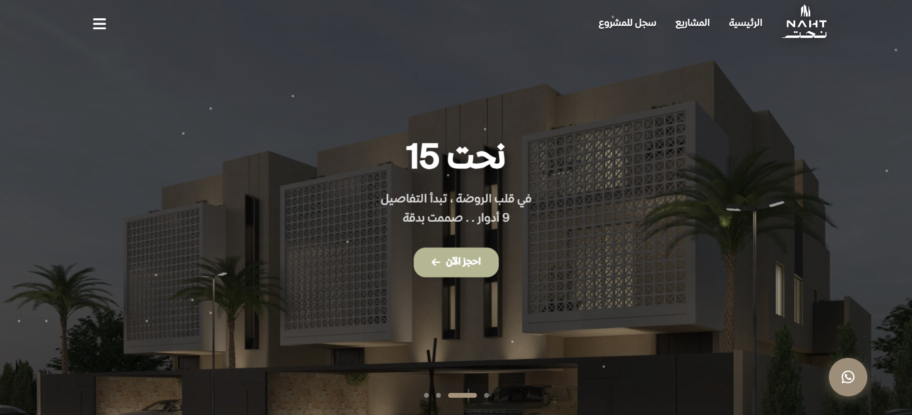
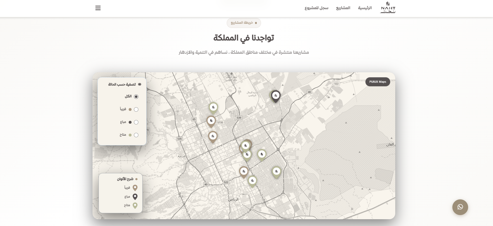
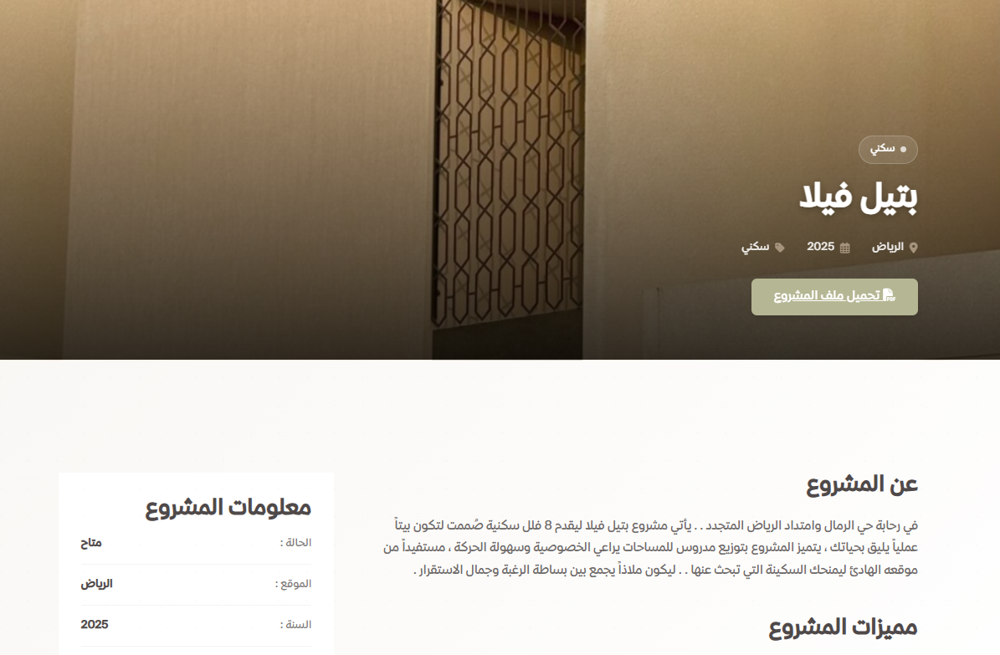
Naht Al-Osoul
Real Estate Architect
Challenge: Building a bespoke geographic engine for high-end real estate filtering. Solution: Created the Naht Assets Engine plugin.
Tech Core
Custom Engine Architecture
Intelligence
Geo-filtering Algorithm
UX
Reactive Interface
Dawah Platform
Institutional Hub
Challenge: A complex Mini-HR system required within an institutional framework. Solution: Developed the Dawah Smart Hub plugin, achieving 100% automation of internal workflows.
Reduced operational overhead by significantly streamlining member onboarding and tracking.
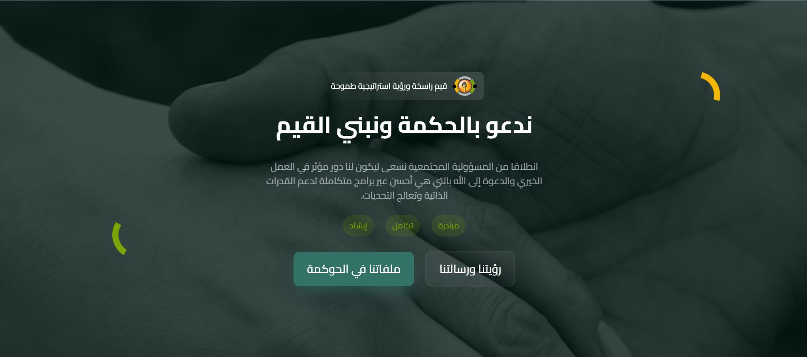
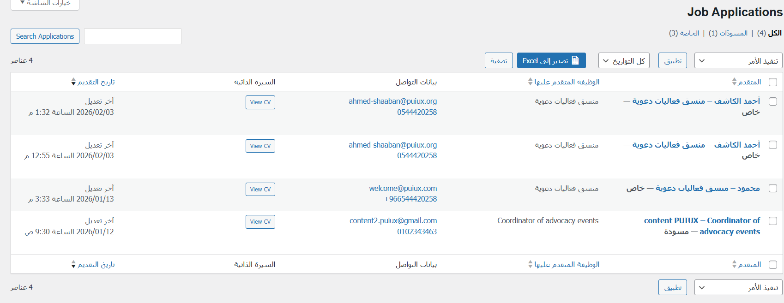
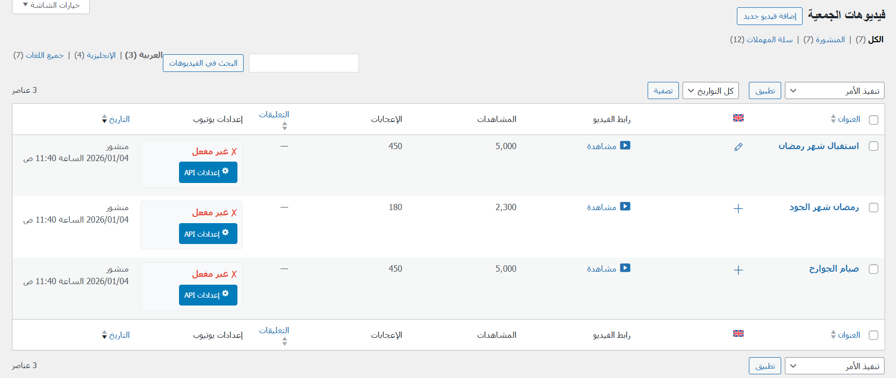
Bayt El-Hikma
Knowledge Repository
Challenge: Scaling post-architecture CPTs with specialized Dark Mode logic. Solution: Engineered the Hikma Archive Manager plugin for specialized knowledge repository management.
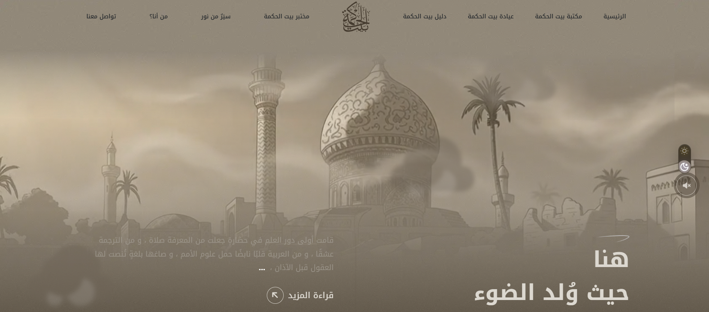
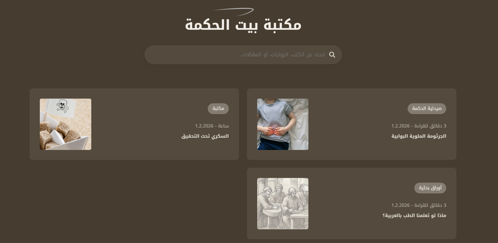
Tech Core
Advanced CPTs
Intelligence
Dark Mode Logic
UX
Custom Widgets
Vision Doors
Product Configurator
Challenge: Complex dual-taxonomy logic for product configuration. Solution: Developed Vision Product Configurator, a high-conversion tool integrating reactive UI components.
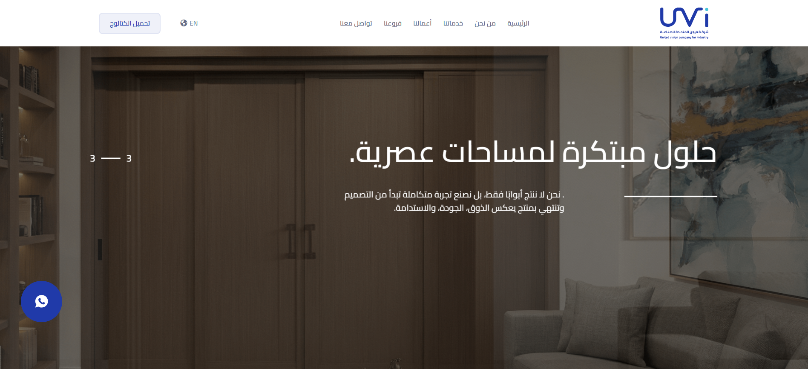
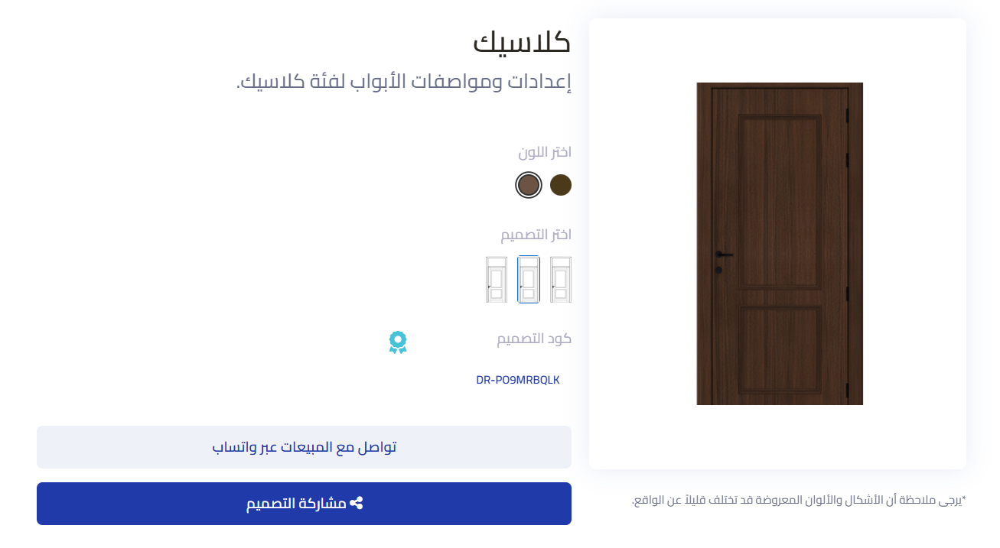
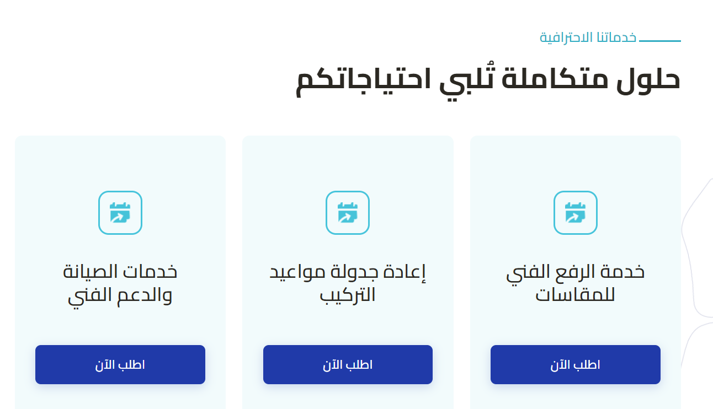
Tech Core
Logic Matrix
Intelligence
Dual-Taxonomy
UX
Reactive UI